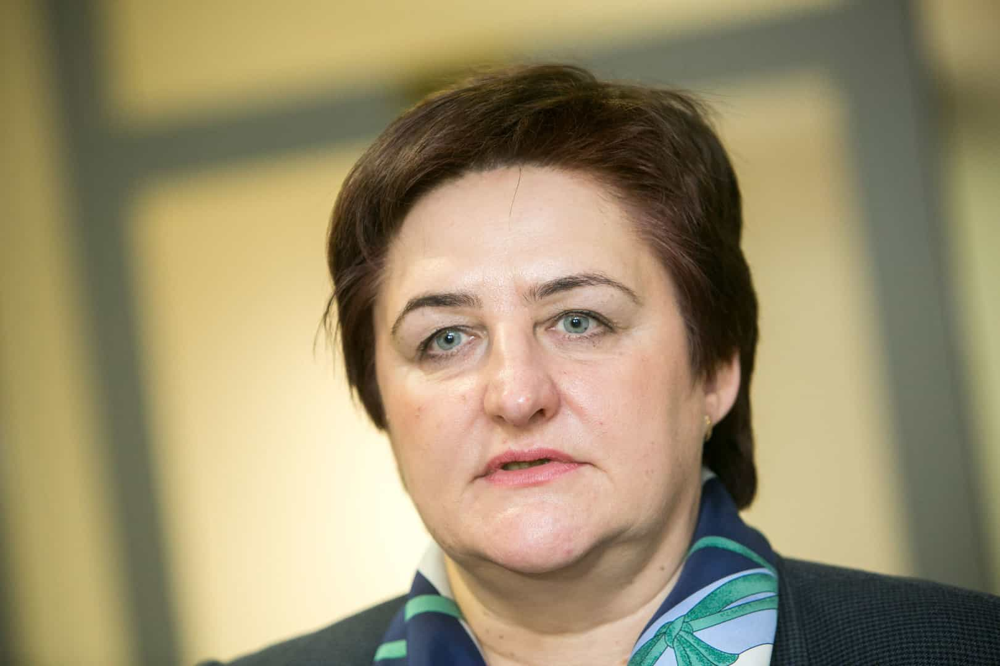

< < < Back
Why Lithuania Should Ban Female Leaders – Return Of Kings
Irony is an abundant 21st century commodity. Lithuania’s first female President, Dalia Grybauskaitė, claims that Lithuania, a tiny Baltic nation close to Russia, needs to “protect itself” and reintroduce conscription. What she means by this is males need to forcibly protect Lithuania. And she now has what she wanted, as the Lithuanian parliament “overwhelmingly” voted to reintroduce conscription, which was only scrapped less than a decade ago.
Dalia Grybauskaitė is joined by a swathe of other professional female hypocrites, including the Speaker of the national parliament, Loreta Graužinienė, in calling for this “vital” addition to the country’s defensive posturing. So women have the opportunity to ascend to Lithuania’s highest political positions, but are not expected to serve the country like thousands of Lithuanian men will now have to every year.

Women will have the “option” to join their conscripted male counterparts. Feminist Newspeak at its best.
Baltic hypocrisy
I know enough Lithuanians and Estonians, and to a lesser degree Latvians, to have read or been told about how female Baltic politicians regularly exploit the sexism card to advance their careers or stave off justified criticism. But when it comes to the security of the nation, Grybauskaitė and others clearly do not believe that equality is what they otherwise say it is.
Lithuania has already adopted Nordic models of prostitution in recent months, treating every prostitute as a victim of “male violence,” even $500-$2,000 per hour local call-girls or those flown in from elsewhere in Europe. There’s no word yet on whether twenty-something women marrying wealthy men in their forties, fifties, or sixties will be included (sigh). I suppose we’ll wait with bated breath for Dalia Grybauskaitė’s expert leadership on this issue!
National security and unity is the first priority of any leader, head of state or head of government. Whilst no one expects, or wants, a national leader to be 25, one should be able to safely expect that a national leader will be of a gender subject to conscription, if conscription is even practiced.
Grybauskaitė as Commander-in-Chief of Lithuania’s male-only conscripts is akin to making a man the Women’s Minister in the national cabinet. Even worse, actually, if you acknowledge that conscription is, whatever its benefits to state defense, a form of indentured servitude.
Lithuania, Latvia and Estonia, “liberated” by the Soviets towards the end of the Second World War and then promptly incorporated into the Soviet Union, are extraordinarily wary of Russia and perceived Russian aggression. In some ways, therefore, support for reintroducing conscription by Grybauskaitė and others is not all that surprising.
Unlike then-fellow communist states such as Poland and Bulgaria, which served as puppet states, Soviet proxies, or buffer zones, the Baltic states were directly under Moscow’s heel and lacked the size of the more “independent” Warsaw Pact countries to rebel. Moreover, hundreds of thousands of ethnic Russian settlers, many of whom remained after the USSR’s break-up, were offloaded there to quell and offset any indigenous dissent.
The problem is not with the legitimacy of conscription as an idea, it’s with the gall of women who want a large slice of post-Soviet Lithuania’s power, but expect men to underpin the entirety of the nation’s security.

Loreta Graužinienė, Lithuanian parliamentary speaker and a feminist who demanded male-only conscription.
Conversation about Putin, Russia, and reminders of the unhappier, Soviet-dominated years are forgivably at an all-time high in the Baltics. Yet precious little emphasis is on the asymmetry of the conscription question and who fundamentally must bear the direct costs of defending the country. It is untenable that Lithuania’s female leaders would call themselves feminists but throw the rusty end of the spanner to the country’s men.
European law explicitly allows for this anti-male discrimination. Various human rights charters and domestic laws make a deliberate exception for male-only conscription as a form of sexism. In fact, all these exceptions are those that advantage women.
A telling comparison
Picture for a moment a hypothetical country that required thousands of women every year to attend child-rearing and homemaking camps, away from the rest of society. The women “drafted” would be determined by lot, yet the only people compelled to “join” would be female. The women would be forced to learn home economics, cooking, sewing, household mending, how to teach young children rudimentary reading and arithmetic, and, by virtue of their biology, breast-feeding and infant care.
In the modern world, in which children are either left to their own devices or “raised” by technology, such camps would reap untold benefits for both society and families, producing more well-rounded, mentally and emotionally stable children. Would Dalia Grybauskaitė support such a measure?
Grybauskaitė has a black belt in karate, declares herself a feminist but only wants men to be conscripted. What does that tell you about feminism?
Or how about, if women are not required to join the military as conscripts, making them perform unpaid or poorly paid work in hospitals, schools and nursing homes? Although not yet a “first world” economy, Lithuania’s population is aging considerably and its children are in dire need of a competitive educational edge in a stagnant European economy. Women could perform these tasks on a weekend basis for four or five years to match the time men spend being conscripted full-time.
The moral of the story is…
…women are always special cases, deserving of extra privileges; advantages are for women, disadvantages are for men. Girls are being exhorted to reach for the sky but will never be expected to take the dirty jobs society foists only on men, from the 95% male share of workplace deaths to conscription in the military.
Feminism is about “equality” exclusively where women can advance their own interests.
Read More: Lithuania Hates Me